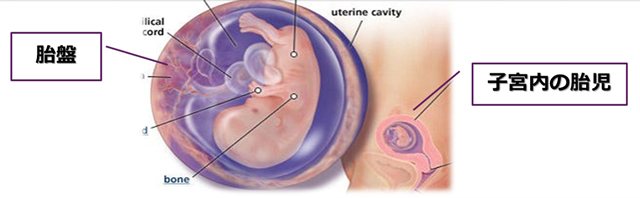

妊娠と薬剤の考え方
- ●妊娠中の薬剤投与は胎盤移行性を考慮する必要がある。
- ●生物学的製剤は高分子のため一般的に胎盤透過性は低いが、抗体製剤は胎盤のFc受容体を介して能動輸送され、妊娠中期~後期に移行量が増加するといわれている。そのため中期以降は特に注意が必要になる。
薬剤による胎盤移行性の違い

Synthetic DMARDs(分子量<1000Da)
濃度勾配に従い単純拡散する。
妊娠週数に関係なく一定量が児に移行する
Biologic DMARDs(分子量>数万Da)
一般的に胎盤透過性は低い。
抗体製剤は胎盤のFc受容体を介して能動輸送され、妊娠中期～移行量が増加
アクテムラ学術講演会2016 国立成育医療研究センター周産期・母性診療センター 母性内科 金子佳代子先生